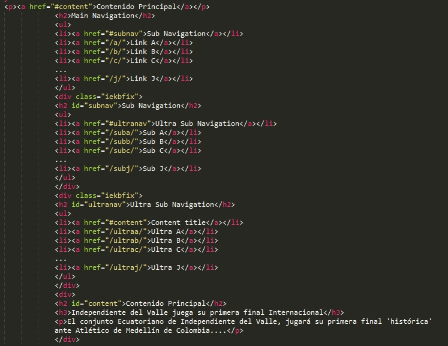
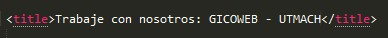
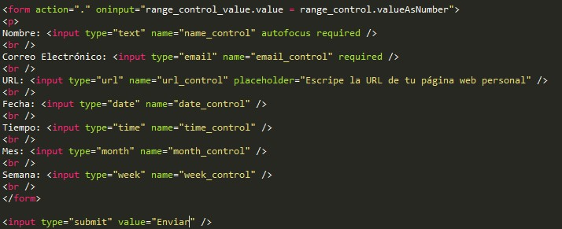
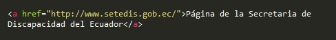

Pauta 2.4 Navegable
Proporcionar medios para ayudar a los usuarios a navegar, encontrar contenido y determinar dónde se encuentran.
Los componentes de la interfaz de usuario y la navegación deben ser operables.
Proporcionar medios para ayudar a los usuarios a navegar, encontrar contenido y determinar dónde se encuentran.
Existe un mecanismo para evitar los bloques de contenido que se repiten en múltiples páginas web.
En una página de noticias, que contiene varios elementos como buscadores, galerias, enlaces de interés, y que presentan su contenido principal en el centro de toda la página, debería haber un link al inicio de la página que dirija al usuario a dicho contenido.
Las páginas web tienen títulos que describen su temática o propósito.
La página web de un grupo pequeño dentro de una organización más grande es publicada. El título de la página Web identifica en primer lugar el tema de la página, a continuación, muestra el nombre del grupo, seguido del nombre de la organización matriz.
Si se puede navegar secuencialmente por una página web y la secuencia de navegación afecta su significado o su operación, los componentes que pueden recibir el foco lo hacen en un orden que preserva su significado y operabilidad.
Dentro de un formulario, existen dos campos de texto, que deben ser llenados en orden para poder continuar, por lo que el primer campo de texto que deba ser llenado debe ir primero seguido del ultimo campo, para que el focus del cursor vaya en ese respectivo orden.
El propósito de cada enlace puede ser determinado con sólo el texto del enlace o a través del texto del enlace sumado el contexto del enlace determinado por software, excepto cuando el propósito del enlace resultara ambiguo para los usuarios en general.
Dentro de una página existe un link hacia la página se la secretaria de discapacidad del ecuador, el texto que debe tener ese enlace será, Página de la Secretaria de Discapacidad del Ecuador.
